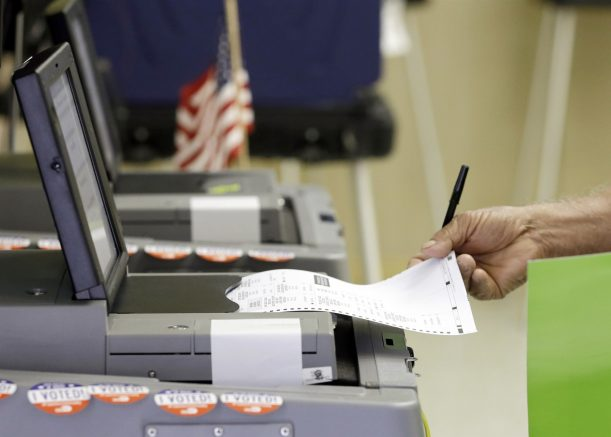
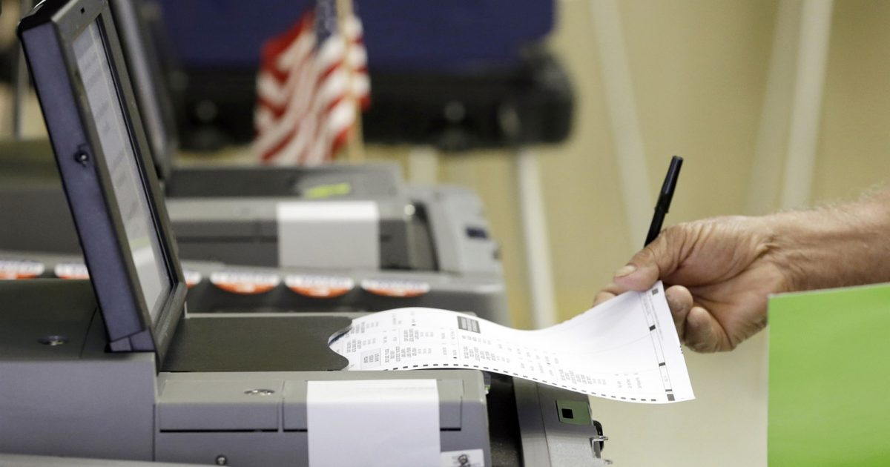

Regent University hosts election integrity conference

OAN Newsroom
The topic of election integrity recently took center stage as the GOP continued to advocate for a secure and fair voting process.
During a virtual conference hosted by Regent University’s Robertson School of Government on Tuesday, multiple Republicans spoke out on the importance on rebuilding voter confidence after one of the most contested elections in U.S. history.
The school’s dean and former GOP Rep.Michelle Bachmann said there were unconstitutional actions that skirted around state voting laws setting up conditions for a predetermined outcome in the 2020 elections.She said voters were intimidated not to question the election results in some key battleground states like Georgia and Pennsylvania.
The virtual conference included speakers like former Director of Trade Peter Navarro who showed how voters are easily influenced by the mainstream media and Big Tech, which barred anyone from questioning the 2020 election results.He called the immediate clampdown on any type of discussion a 'tragedy' in the country.
Likewise, keynote speaker and former HUD Secretary Dr.Ben Carson doubled down on Bachmann’s claims while stating the current election system needs to overhauled with bipartisan support.He said until lawmakers can come together on election integrity, voters will continue to mistrust the electoral process.
Other panel members included former Kansas Secretary of State Kris Kobach who discussed key issues like voter ID requirements and warned about sweeping election reforms that Democrats are trying to pass.He noted, this type of legislation would nationalize elections.
Analysts warned the Democrat proposed H.R.1 would normalize illegal voting and fraud in order to elect Democrat candidates with universal mail-in ballots, while noting the legislation would mark a federal takeover of state and local elections.
Currently, the controversial bill awaits discussion in the Senate as Republican lawmakers continue advocating for election integrity.
Posted On: 2021-03-24T00:00:00

Content Date: 2021-03-24
Download Date: 2021-04-16
Document ID: L0C049WKK